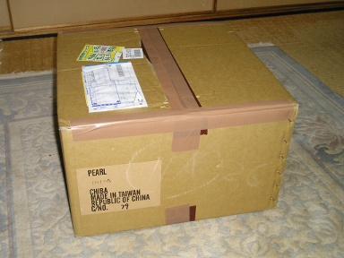
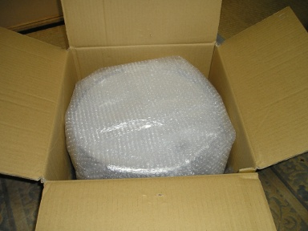
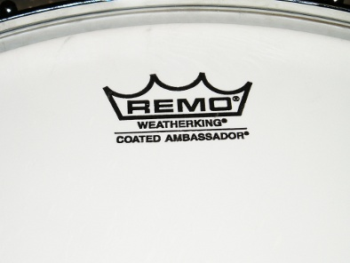
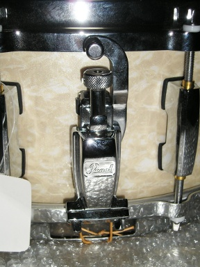
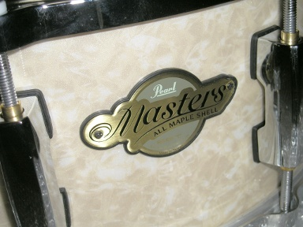
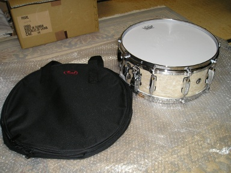
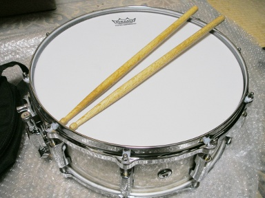

なんかきた。

開けてみた。

お？

おや？なんか装置が。

なんかエンブレムが。

おぉっ！！

ジャジャーン！！

この子は Pearl の Masters Custom MCX1455S/C というスネアです。カラーはヴィンテージ・マリン・パール。
本当はホワイト・マリン・パールが欲しかったのですが、残念ながら在庫切れ。どちらのカラーも Pearl のカラー・チャートにないので、購入ショップのショップ固有カラーなのかもしれません。どこのメーカーも販売力のあるお店には、そういう特別なカラーリングを出荷するという話を聞いたことがあります。
ヴィンテージ・サンバーストという味わい深いカラーでもよかったのですが ( 事実購入第二候補でした ) こちらも在庫切れで、やはり Pearl のカラーチャートになかったので、これもショップ・オーダー・カラーなのかもしれません。
この子の購入費用を貯めるのにがんばって 500 円とかをちびちびと貯めて 2 年くらいかかりました。小学生のときに数百円のおこずかいを毎月ためて、The Beatles の LP を買っていたのを思い出します。
ちなみに、この子は店頭販売品でもあったので試打の打痕がヘッドにかなりありました。でもヘッドにへこみがあるわけでもなく、打痕もそれほど酷くなかったので特に交換を求める必要はないと思い、そのままにしています。
ギター弾きの人なんかの場合、店頭でギターを購入した時にもともと張ってる弦に文句をつける人もいないでしょう。同じことです。ドラムのヘッドは消耗品ですが、ショップさんがサービスでつけるには高価すぎます。ヘッドとのセット販売はありかとも思いますが、人によって使いたいヘッドも違ってそうで現実的には難しそうです。
ところでスネア・スタンドを持っていません。またちびちび小銭を貯めなきゃです。